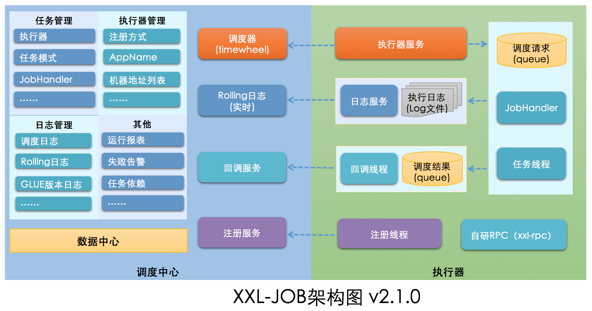
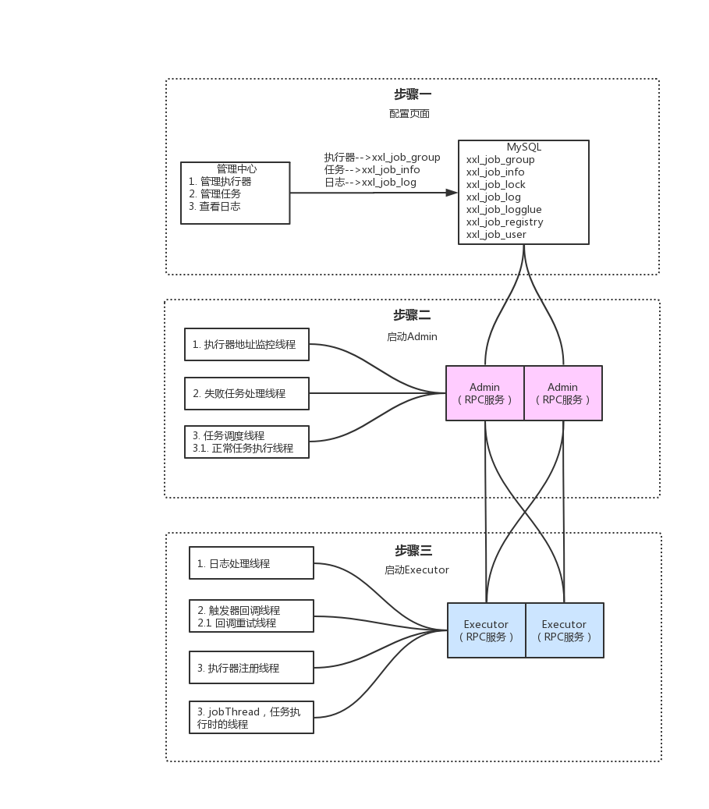

xxl-job分布式定时任务
https://www.pppet.net/
在线生成corn表达式网址
为什么需要分布式定时任务？
spring 的定时任务有哪些缺陷？
1.不支持高可用。
2.不支持动态修改定时循环的时间点
3.不支持动态传参
为什么使用xxl-job?
1.定时任务的三大要素：触发器，任务，执行器
2.可以通过分布式锁（redis）实现HA
2.路由策略
xxl-job 为什么要额外暴露一个端口用于通信？
如何实现阻塞策略 java并发编程 阻塞队列
select * from xxl_job_lock where lock_name = ‘schedule_lock’ for update
排它锁
选中某一个行的时候,如果是通过主键id选中的。那么这个时候是行级锁。 其他的行还是可以直接insert 或者update的。
如果是通过其他的方式选中行,或者选中的条件不明确包含主键。这个时候会锁表。其他的事务对该表的任意一行记录都无法进行插入或者更新操作。只能读取。
xxl-job 系统说明 安装 安装部署参考文档：分布式任务调度平台xxl-job
源码仓库地址 功能
定时调度、服务解耦、灵活控制跑批时间（停止、开启、重新设定时间、手动触发）
XXL-JOB是一个轻量级分布式任务调度平台，其核心设计目标是开发迅速、学习简单、轻量级、易扩展。现已开放源代码并接入多家公司线上产品线，开箱即用
概念 执行器列表：一个执行器是一个项目
任务：一个任务是一个项目中的 JobHandler
一个xxl-job服务可以有多个执行器（项目），一个项目下可以有多个任务（JobHandler），他们是如何关联的？
页面操作：
在管理平台可以新增执行器（项目）
在任务列表可以指定执行器（项目）下新增多个任务（JobHandler）
代码操作：
项目配置中增加 xxl.job.executor.appname = “执行器名称”
在实现类中增加 @JobHandler(value=“xxl-job-demo”) 注解，并继承 IJobHandler
架构图 
抛出疑问
调度中心启动过程？
执行器启动过程？
执行器如何注册到调度中心？
调度中心怎么调用执行器？
集群调度时如何控制一个任务在该时刻不会重复执行
集群部署应该注意什么？
系统分析 执行器依赖jar包 com.xuxueli:xxl-job-core:2.1.0
com.xuxueli:xxl-registry-client:1.0.2
com.xuxueli:xxl-rpc-core:1.4.1
调度中心启动过程 1 2 3 4 5 6 7 8 9 10 11 12 13 14 15 16 17 18 19 20 21 22 23 24 25 26 27 28 29 30 31 32 33 34 35 36 37 38 39 40 41 42 43 44 45 46 47 48 49 50 51 52 53 54 55 56 57 XxlJobAdminConfig.java @Component public class XxlJobScheduler private static final Logger logger = LoggerFactory.getLogger(XxlJobScheduler.class); public void init () throws Exception initI18n(); JobRegistryMonitorHelper.getInstance().start(); JobFailMonitorHelper.getInstance().start(); JobLosedMonitorHelper.getInstance().start(); JobTriggerPoolHelper.toStart(); JobLogReportHelper.getInstance().start(); JobScheduleHelper.getInstance().start(); logger.info(">>>>>>>>> init xxl-job admin success." ); }
执行器启动过程 1 2 3 4 5 6 7 8 9 10 11 12 13 14 15 16 17 18 19 20 21 22 23 24 25 26 27 28 29 30 31 32 33 34 35 36 37 38 39 40 41 42 43 44 45 46 47 48 49 50 51 52 53 54 55 56 57 58 59 @Override public void start () throws Exception initJobHandlerRepository(applicationContext); GlueFactory.refreshInstance(1 ); super .start(); } public void start () throws Exception XxlJobFileAppender.initLogPath(this .logPath); this .initAdminBizList(this .adminAddresses, this .accessToken); JobLogFileCleanThread.getInstance().start((long )this .logRetentionDays); TriggerCallbackThread.getInstance().start(); this .port = this .port > 0 ? this .port : NetUtil.findAvailablePort(9999 ); this .ip = this .ip != null && this .ip.trim().length() > 0 ? this .ip : IpUtil.getIp(); this .initRpcProvider(this .ip, this .port, this .appName, this .accessToken); }
执行器注册到调度中心
执行器
1 2 3 4 5 6 7 8 9 10 11 12 13 14 15 16 17 18 19 20 21 22 23 24 25 26 27 28 29 30 31 32 33 34 35 36 37 38 39 40 41 XxlJobExecutor.java->initRpcProvider()->xxlRpcProviderFactory.start(); XxlRpcProviderFactory.java->start(); ExecutorRegistryThread.java->start(); for (AdminBiz adminBiz: XxlJobExecutor.getAdminBizList()) { try { ReturnT<String> registryResult = adminBiz.registry(registryParam); if (registryResult!=null && ReturnT.SUCCESS_CODE == registryResult.getCode()) { registryResult = ReturnT.SUCCESS; logger.debug(">>>>>>>>>>> xxl-job registry success, registryParam:{}, registryResult:{}" , new Object[]{registryParam, registryResult}); break ; } else { logger.info(">>>>>>>>>>> xxl-job registry fail, registryParam:{}, registryResult:{}" , new Object[]{registryParam, registryResult}); } } catch (Exception e) { logger.info(">>>>>>>>>>> xxl-job registry error, registryParam:{}" , registryParam, e); } }
调度中心
1 2 3 AdminBizImpl.java->registry();
数据库
调度中心调用执行器 1 2 3 4 5 6 7 8 9 10 11 12 13 14 15 16 17 18 19 20 21 22 23 24 25 26 27 28 29 30 31 32 XxlJobTrigger.java->runExecutor(); XxlJobScheduler.java->getExecutorBiz(); ExecutorBizImpl.java->run(); ExecutorBiz.java->run(); ExecutorBizImpl.java->run(); XxlJobExecutor.java->registJobThread(); JobThread.java->pushTriggerQueue(); JobThread.java->handler.execute(triggerParam.getExecutorParams());
调度中心（Admin） 实现 org.springframework.beans.factory.InitializingBean类，重写 afterPropertiesSet 方法，在初始化bean的时候都会执行该方法
DisposableBean spring停止时执行
结束加载项
停止定时任务调度器（中断scheduleThread，中断ringThread）
停止触发线程池（JobTriggerPoolHelper）
停止注册监控器（registryThread）
停止失败日志监控器（monitorThread）
停止RPC服务（stopRpcProvider）
手动执行方式 1 2 3 4 5 6 7 8 9 10 11 12 13 14 15 16 JobInfoController.java @RequestMapping("/trigger") @ResponseBody public ReturnT<String> triggerJob (int id, String executorParam) if (executorParam == null ) { executorParam = "" ; } JobTriggerPoolHelper.trigger(id, TriggerTypeEnum.MANUAL, -1 , null , executorParam); return ReturnT.SUCCESS; }
定时调度策略 调度策略执行图
调度策略源码
1 JobScheduleHelper.java->start();
路由策略 第一个 固定选择第一个机器
1 ExecutorRouteFirst.java->route();
最后一个 固定选择最后一个机器
1 ExecutorRouteLast.java->route();
轮询 随机选择在线的机器
1 2 3 4 5 6 7 8 9 10 11 12 13 14 15 16 17 ExecutorRouteRound.java->route(); private static int count (int jobId) if (System.currentTimeMillis() > CACHE_VALID_TIME) { routeCountEachJob.clear(); CACHE_VALID_TIME = System.currentTimeMillis() + 1000 *60 *60 *24 ; } Integer count = routeCountEachJob.get(jobId); count = (count==null || count>1000000 )?(new Random().nextInt(100 )):++count; routeCountEachJob.put(jobId, count); return count; }
随机 随机获取地址列表中的一个
1 ExecutorRouteRandom.java->route();
一致性HASH 一个job通过hash算法固定使用一台机器，且所有任务均匀散列在不同机器
1 2 3 4 5 6 7 8 9 10 11 12 13 14 15 16 17 18 19 20 21 22 23 24 25 26 ExecutorRouteConsistentHash.java->route(); public String hashJob (int jobId, List<String> addressList) TreeMap<Long, String> addressRing = new TreeMap<Long, String>(); for (String address: addressList) { for (int i = 0 ; i < VIRTUAL_NODE_NUM; i++) { long addressHash = hash("SHARD-" + address + "-NODE-" + i); addressRing.put(addressHash, address); } } long jobHash = hash(String.valueOf(jobId)); SortedMap<Long, String> lastRing = addressRing.tailMap(jobHash); if (!lastRing.isEmpty()) { return lastRing.get(lastRing.firstKey()); } return addressRing.firstEntry().getValue(); }
最不经常使用
使用频率最低的机器优先被选举
把地址列表加入到内存中，等下次执行时剔除无效的地址，判断地址列表中执行次数最少的地址取出
频率、次数
1 2 3 4 5 6 7 8 9 10 11 12 13 14 15 16 17 18 19 20 21 22 23 24 25 26 27 28 29 30 31 32 33 34 35 36 37 38 39 40 41 42 43 44 45 46 47 48 49 50 51 52 53 54 55 56 57 58 59 60 61 62 63 64 65 66 67 68 69 70 71 72 ExecutorRouteLFU.java->route(); public String route (int jobId, List<String> addressList) if (System.currentTimeMillis() > CACHE_VALID_TIME) { jobLfuMap.clear(); CACHE_VALID_TIME = System.currentTimeMillis() + 1000 *60 *60 *24 ; } HashMap<String, Integer> lfuItemMap = jobLfuMap.get(jobId); if (lfuItemMap == null ) { lfuItemMap = new HashMap<String, Integer>(); jobLfuMap.putIfAbsent(jobId, lfuItemMap); } for (String address: addressList) { if (!lfuItemMap.containsKey(address) || lfuItemMap.get(address) >1000000 ) { lfuItemMap.put(address, new Random().nextInt(addressList.size())); } } List<String> delKeys = new ArrayList<>(); for (String existKey: lfuItemMap.keySet()) { if (!addressList.contains(existKey)) { delKeys.add(existKey); } } if (delKeys.size() > 0 ) { for (String delKey: delKeys) { lfuItemMap.remove(delKey); } } Iterator<String> iterable = lfuItemMap.keySet().iterator(); while (iterable.hasNext()) { String address = iterable.next(); if (!addressList.contains(address)) { iterable.remove(); } } List<Map.Entry<String, Integer>> lfuItemList = new ArrayList<Map.Entry<String, Integer>>(lfuItemMap.entrySet()); Collections.sort(lfuItemList, new Comparator<Map.Entry<String, Integer>>() { @Override public int compare (Map.Entry<String, Integer> o1, Map.Entry<String, Integer> o2) return o1.getValue().compareTo(o2.getValue()); } }); Map.Entry<String, Integer> addressItem = lfuItemList.get(0 ); String minAddress = addressItem.getKey(); addressItem.setValue(addressItem.getValue() + 1 ); return addressItem.getKey(); }
最近最久未使用
最久未使用的机器优先被选举
用链表的方式存储地址，第一个地址使用后下次该任务过来使用第二个地址，依次类推（PS：有点类似轮询策略）
与轮询策略的区别：
轮询策略是第一次随机找一台机器执行，后续执行会将索引加1取余
轮询策略依赖 addressList 的顺序，如果这个顺序变了，索引到下一次的机器可能不是期望的顺序
LRU算法第一次执行会把所有地址加载进来并缓存，从第一个地址开始执行，即使 addressList 地址顺序变了也不影响
次数
1 2 3 4 5 6 7 8 9 10 11 12 13 14 15 16 17 18 19 20 21 22 23 24 25 26 27 28 29 30 31 32 33 34 35 36 37 38 39 40 41 42 43 44 45 46 47 48 49 50 51 52 53 54 55 56 57 58 59 60 61 62 63 64 65 66 67 68 69 70 71 72 ExecutorRouteLRU.java->route(); public String route (int jobId, List<String> addressList) if (System.currentTimeMillis() > CACHE_VALID_TIME) { jobLRUMap.clear(); CACHE_VALID_TIME = System.currentTimeMillis() + 1000 *60 *60 *24 ; } LinkedHashMap<String, String> lruItem = jobLRUMap.get(jobId); if (lruItem == null ) { lruItem = new LinkedHashMap<String, String>(16 , 0.75f , true ); jobLRUMap.putIfAbsent(jobId, lruItem); } LinkedHashMap<String, String> lruItem = new LinkedHashMap<String, String>(16 , 0.75f , true ); jobLRUMap.putIfAbsent(1 , lruItem); lruItem.put("192.168.0.1" , "192.168.0.1" ); lruItem.put("192.168.0.2" , "192.168.0.2" ); lruItem.put("192.168.0.3" , "192.168.0.3" ); String eldestKey = lruItem.entrySet().iterator().next().getKey(); String eldestValue = lruItem.get(eldestKey); System.out.println(eldestValue + ": " + lruItem); eldestKey = lruItem.entrySet().iterator().next().getKey(); eldestValue = lruItem.get(eldestKey); System.out.println(eldestValue + ": " + lruItem); 192.168 .0 .1 : {192.168 .0 .2 =192.168 .0 .2 , 192.168 .0 .3 =192.168 .0 .3 , 192.168 .0 .1 =192.168 .0 .1 } 192.168 .0 .2 : {192.168 .0 .3 =192.168 .0 .3 , 192.168 .0 .1 =192.168 .0 .1 , 192.168 .0 .2 =192.168 .0 .2 } for (String address: addressList) { if (!lruItem.containsKey(address)) { lruItem.put(address, address); } } List<String> delKeys = new ArrayList<>(); for (String existKey: lruItem.keySet()) { if (!addressList.contains(existKey)) { delKeys.add(existKey); } } if (delKeys.size() > 0 ) { for (String delKey: delKeys) { lruItem.remove(delKey); } } String eldestKey = lruItem.entrySet().iterator().next().getKey(); String eldestValue = lruItem.get(eldestKey); return eldestValue; }
故障转移
按照顺序依次进行心跳检测，第一个心跳检测成功的机器选定为目标执行器并发起调度
1 ExecutorRouteFailover.java->route();
忙碌转移 按照顺序依次进行空闲检测，第一个空闲检测成功的机器选定为目标执行器并发起调度
1 ExecutorRouteBusyover.java->route();
分片广播 广播触发对应集群中所有机器执行一次任务，同时传递分片参数；可根据分片参数开发分片任务
阻塞处理策略 为了解决执行线程因并发问题、执行效率慢、任务多等原因而做的一种线程处理机制，主要包括 串行、丢弃后续调度、覆盖之前调度，一般常用策略是串行机制
1 2 3 4 5 6 7 8 9 10 11 12 13 14 15 16 17 18 19 20 21 22 23 24 25 26 27 28 29 30 31 ExecutorBlockStrategyEnum.java SERIAL_EXECUTION("Serial execution" ), DISCARD_LATER("Discard Later" ), COVER_EARLY("Cover Early" ); ExecutorBizImpl.java->run(); if (jobThread != null ) { ExecutorBlockStrategyEnum blockStrategy = ExecutorBlockStrategyEnum.match(triggerParam.getExecutorBlockStrategy(), null ); if (ExecutorBlockStrategyEnum.DISCARD_LATER == blockStrategy) { if (jobThread.isRunningOrHasQueue()) { return new ReturnT<String>(ReturnT.FAIL_CODE, "block strategy effect：" +ExecutorBlockStrategyEnum.DISCARD_LATER.getTitle()); } } else if (ExecutorBlockStrategyEnum.COVER_EARLY == blockStrategy) { if (jobThread.isRunningOrHasQueue()) { removeOldReason = "block strategy effect：" + ExecutorBlockStrategyEnum.COVER_EARLY.getTitle(); jobThread = null ; } } else { } }
单机串行 对当前线程不做任何处理，并在当前线程的队列里增加一个执行任务
丢弃后续调度 如果当前线程阻塞，后续任务不再执行，直接返回失败
覆盖之前调度 创建一个移除原因，新建一个线程去执行后续任务
运行模式 1 ExecutorBizImpl.java->run();
BEAN java里的bean对象
GLUE(Java) 利用java的反射机制，通过代码字符串生成实体类
1 2 3 4 IJobHandler originJobHandler = GlueFactory.getInstance().loadNewInstance(triggerParam.getGlueSource()); GroovyClassLoader
GLUE(Shell Python PHP Nodejs PowerShell) 按照文件命名规则创建一个执行脚本文件和一个日志输出文件，通过脚本执行器执行
失败重试次数 任务失败后记录到 xxl_job_log 中，由失败监控线程查询处理失败的任务且失败次数大于0，继续执行
任务超时时间 把超时时间给 triggerParam 触发参数，在调用执行器的任务时超时时间，有点类似HttpClient的超时时间
执行器（Exector）
注册自己的机器地址
注册项目中的 JobHandler
提供被调度中心调用的接口
1 2 3 4 5 6 7 8 9 10 11 12 13 14 15 16 17 18 19 20 21 22 23 24 25 26 27 28 29 30 31 32 33 34 35 36 37 38 39 40 41 42 43 44 45 46 47 48 public interface ExecutorBiz public ReturnT<String> beat () public ReturnT<String> idleBeat (IdleBeatParam idleBeatParam) public ReturnT<String> run (TriggerParam triggerParam) public ReturnT<String> kill (KillParam killParam) public ReturnT<LogResult> log (LogParam logParam) }
总结

学到了什么
路由算法（LFU、LRU、轮询等）
JDK动态代理对象（详细研究）
用到了Netty（详细研究）
FutureTask
GroovyClassLoader
spring 启动加载自定义注解
If you like this blog or find it useful for you, you are welcome to comment on it. You are also welcome to share this blog, so that more people can participate in it. If the images used in the blog infringe your copyright, please contact the author to delete them. Thank you !